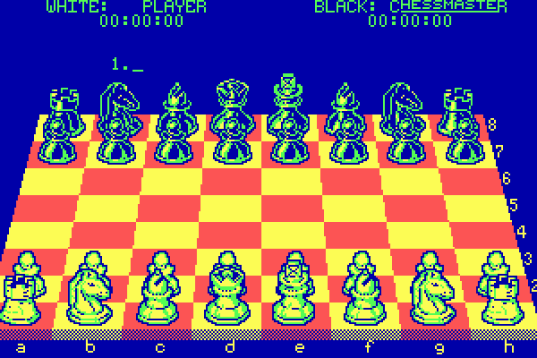
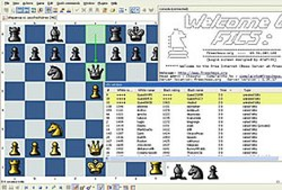
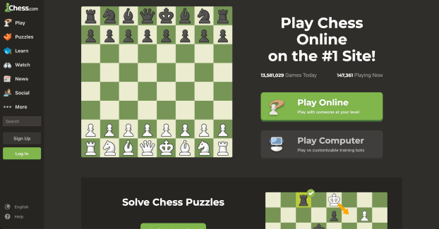

Evolution of Chess
How has chess gone from physical chess board and chess pieces to a game played on the internet?
Surprisingly, people have always been curious about having a machine play chess against humans.
This curiosity has stemmed from as early as the 18th century. The dream of having machines play against humans
came true in the mid-20th century, when electronic digital computers were made into existence. Over the following decades,
computers went from only playing a limited game of chess to beating a World Chess Champion.
Let’s take a look at how chess has evolved through the computer world.
Mechanical Turk (1770)
Wolfgang von Kempelen surprised the world when he invented a machine that could play chess with humans with the use of a robotic hand. Disappointingly, the machine was not real. A Human hid inside the “machine” to move the robotic looking hand. Though this was not a real computer chess creation, it sparked the curiosity of humans playing chess with a machine.

Dietrich Prinz (1951)
Dietrich Prinz created the first chess game to run on an electric computer, the Ferranti Mark 1. The Ferranti Mark 1 didn’t have enough power to play a whole game of chess. It could only predict the best move if the move was only two away from checkmate.

Bernstein Chess Program (1957)
Alex Bernstein created the first chess game on a computer that could play a full game of chess. The game ran on the IBM 704 mainframe.

The First Chess Computer (1977)
This was the first electronic computer dedicated to chess. Fidelity Electronics of Chicago created the Chess Challenger. Players entered moves on the keypad in certain notation. The computer would make its move by lighting up an LED display.

Robotic Chess (1980-1983)
Up until this point, computer chess required humans to move the computers pieces by hand. But with the Boris Handroid and the Novak Robot Adversary, a movable arm would move the computer’s pieces. As for the Milton Bradley Grandmaster, there was an electromagnet on the movable arm under the chess board.
The Chessmaster 2000 (1986)
The Chessmaster 2000 was released by The Software Toolworks for computer platforms like the Commodore 64, Amiga, and MS-DOS. The engine for the Chessmaster 2000 was made by Dave Kittinger. This brand dominated sales for chess computer games over the following two decades.
Internet Chess Server (1992)
The Internet Chess Club launched the Internet Chess Server, or ICS. This was the pioneering platform for people worldwide to unite online and play chess. In 1995, ICS started charging for membership so many members moved over to FICS, Free Internet Chess Server, which still runs today.
Kasparov versus Deep Blue (1996-1997)
In 1996, IBM’s Deep Blue computer defeated World Chess Champion Garry Kasparov in one game. This was a huge dream achievement for programmers to have computers defeat human players in chess.

Chess Today
In today's digital era, chess enthusiasts world wide can connect online, engaging in chess matches with players from around the world at any hour. Platforms like Chess.com have become popular choices for those seeking play with other human players.
